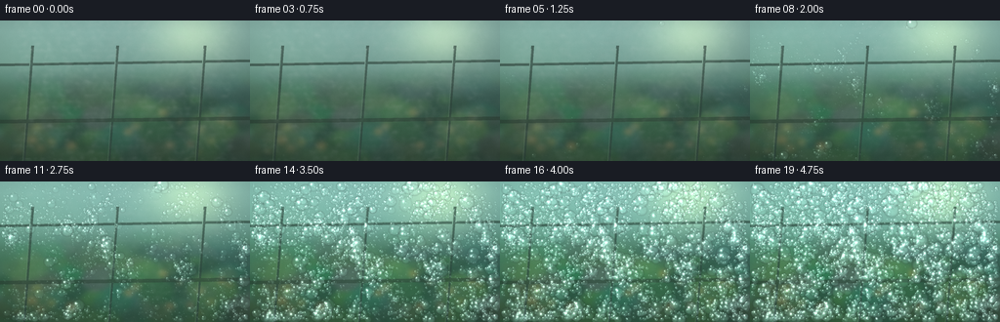
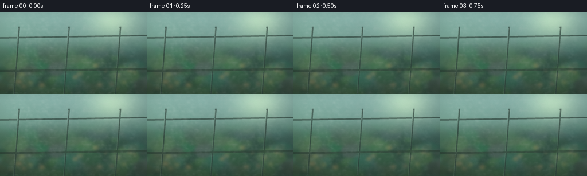
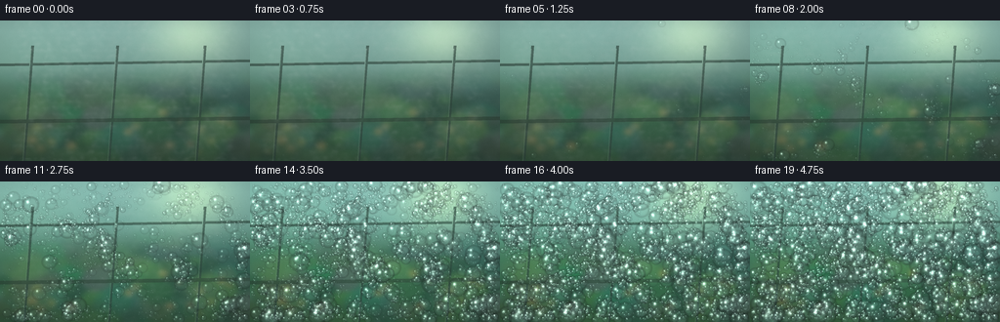
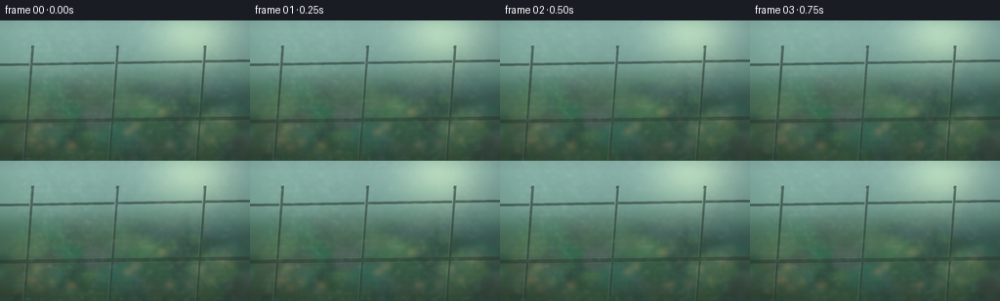

CODING AGENTS AS PIXEL WORLD MODELS
traex/DeepSeek-V4.1-Flash · phygen_104
点击播放 · 原生 RGB 像素
逐轮保存的候选
回放视频、检查图与代码变化。
每份候选均可单独播放。实际图片检查记录在下方工具轨迹中。
候选 01播放与检查图
点击播放 · 原生 RGB 像素

展开代码变化
--- 上一保存版本
+++ 本次保存版本
@@ -0,0 +1,340 @@
+from pathlib import Path
+
+import numpy as np
+from PIL import Image, ImageDraw, ImageFilter
+from scipy.ndimage import gaussian_filter, map_coordinates
+
+import artifact_io
+
+
+W, H, N, FPS = 256, 144, 20, 4.0
+SS = 4
+RW, RH = W * SS, H * SS
+OUT = Path(__file__).resolve().parent
+RNG = np.random.default_rng(10417)
+
+
+def smoothstep(a, b, x):
+ t = np.clip((x - a) / (b - a), 0.0, 1.0)
+ return t * t * (3.0 - 2.0 * t)
+
+
+def fbm(seed, shape, octaves=5):
+ rng = np.random.default_rng(seed)
+ result = np.zeros(shape, np.float32)
+ weight = 0.0
+ for octave in range(octaves):
+ cell = 3 * (2**octave)
+ h = max(3, int(shape[0] / cell))
+ w = max(3, int(shape[1] / cell))
+ base = rng.random((h, w), dtype=np.float32)
+ layer = np.asarray(
+ Image.fromarray((base * 255).astype(np.uint8)).resize(
+ (shape[1], shape[0]), Image.Resampling.BICUBIC
+ ),
+ dtype=np.float32,
+ ) / 255.0
+ amplitude = 0.53**octave
+ result += amplitude * layer
+ weight += amplitude
+ return result / weight
+
+
+def make_background():
+ yy, xx = np.mgrid[0:RH, 0:RW].astype(np.float32)
+ x = xx / RW
+ y = yy / RH
+
+ top = np.array([146, 183, 174], np.float32)
+ bottom = np.array([44, 75, 57], np.float32)
+ horizon = np.clip((y - 0.08) / 0.84, 0, 1)[..., None]
+ image = top * (1 - horizon) + bottom * horizon
+
+ # Warm sun filtering through the greenhouse roof.
+ sun = np.exp(-(((x - 0.77) / 0.23) ** 2 + ((y - 0.10) / 0.30) ** 2) * 2.2)
+ image += sun[..., None] * np.array([63, 52, 24], np.float32)
+ side_light = np.exp(-(((x - 0.04) / 0.32) ** 2 + ((y - 0.34) / 0.44) ** 2))
+ image += side_light[..., None] * np.array([12, 19, 11], np.float32)
+
+ # Out-of-focus foliage, drawn large so the plastic remains the subject.
+ foliage = Image.new("RGB", (RW, RH), (38, 65, 46))
+ draw = ImageDraw.Draw(foliage, "RGBA")
+ for _ in range(145):
+ cx = RNG.uniform(-0.08, 1.08) * RW
+ cy = RNG.uniform(0.30, 1.10) * RH
+ rx = RNG.uniform(0.025, 0.105) * RW
+ ry = rx * RNG.uniform(0.38, 0.92)
+ angle = RNG.uniform(-75, 75)
+ color = (
+ int(RNG.integers(38, 93)),
+ int(RNG.integers(74, 132)),
+ int(RNG.integers(45, 91)),
+ int(RNG.integers(85, 180)),
+ )
+ draw.ellipse((cx - rx, cy - ry, cx + rx, cy + ry), fill=color)
+ if angle > 42:
+ draw.line((cx - rx * 0.5, cy + ry, cx + rx * 0.3, cy - ry), fill=(42, 71, 43, 80), width=2)
+
+ # A few warm flower heads provide greenhouse color without stealing focus.
+ for _ in range(18):
+ cx = RNG.uniform(0.05, 0.95) * RW
+ cy = RNG.uniform(0.55, 0.94) * RH
+ r = RNG.uniform(2.5, 6.0) * SS
+ color = (int(RNG.integers(170, 221)), int(RNG.integers(113, 162)), int(RNG.integers(61, 103)), 145)
+ draw.ellipse((cx - r, cy - r * 0.7, cx + r, cy + r * 0.7), fill=color)
+
+ foliage = np.asarray(foliage.filter(ImageFilter.GaussianBlur(2.6 * SS)), dtype=np.float32)
+ foliage_mask = smoothstep(0.28, 0.61, y)
+ image = image * (1 - foliage_mask[..., None] * 0.76) + foliage * (foliage_mask[..., None] * 0.76)
+
+ # Soil and a soft aisle at the bottom.
+ soil = smoothstep(0.79, 1.0, y)
+ image = image * (1 - soil[..., None] * 0.50) + np.array([38, 46, 30], np.float32) * soil[..., None] * 0.50
+
+ # Structure behind the plastic: roof ribs, posts and one long bench edge.
+ structure = Image.new("RGBA", (RW, RH), (0, 0, 0, 0))
+ sd = ImageDraw.Draw(structure)
+ beam = (43, 58, 47, 172)
+ highlight = (116, 136, 111, 70)
+ sd.line((0, int(0.315 * RH), RW, int(0.286 * RH)), fill=beam, width=3 * SS)
+ sd.line((0, int(0.305 * RH), RW, int(0.276 * RH)), fill=highlight, width=SS)
+ for fx in (0.13, 0.47, 0.82):
+ sd.line((fx * RW, int(0.18 * RH), (fx - 0.035) * RW, RH), fill=beam, width=3 * SS)
+ sd.line(((fx - 0.006) * RW, int(0.20 * RH), (fx - 0.039) * RW, RH), fill=highlight, width=SS)
+ sd.line((0, int(0.72 * RH), RW, int(0.695 * RH)), fill=(41, 54, 39, 145), width=4 * SS)
+
+ structure_np = np.asarray(structure, dtype=np.float32)
+ alpha = structure_np[..., 3:4] / 255.0
+ image = image * (1 - alpha) + structure_np[..., :3] * alpha
+
+ # A cool plastic tint and a diffused sheet boundary.
+ image = image * np.array([0.91, 0.98, 0.97], np.float32)
+ image += np.array([4, 10, 12], np.float32)
+ return image
+
+
+def sheet_shading():
+ yy, xx = np.mgrid[0:RH, 0:RW].astype(np.float32)
+ x = xx / RW
+ y = yy / RH
+ broad = fbm(902, (RH, RW), 5)
+ wrinkles = (
+ np.sin((x * 8.3 + y * 3.2 + broad * 2.2) * np.pi)
+ + 0.58 * np.sin((x * 17.0 - y * 6.7 + broad * 1.1) * np.pi)
+ + 0.32 * np.sin((x * 31.0 + y * 13.0) * np.pi)
+ )
+ wrinkles = gaussian_filter(wrinkles.astype(np.float32), 1.2 * SS)
+ dx = np.gradient(wrinkles, axis=1)
+ dy = np.gradient(wrinkles, axis=0)
+ shade = 1.0 + 0.045 * dx - 0.030 * dy
+ sheen = np.clip(0.50 + 0.50 * wrinkles, 0, 1)
+ glare = np.exp(-(((x - 0.69) / 0.17) ** 2 + ((y - 0.20) / 0.28) ** 2))
+ return shade, sheen, glare, dx, dy
+
+
+def make_droplets(wetness):
+ yy, xx = np.mgrid[0:RH, 0:RW].astype(np.float32)
+ x = xx / RW
+ y = yy / RH
+ wet_sample = map_coordinates(
+ wetness,
+ [y * (RH - 1), x * (RW - 1)],
+ order=1,
+ )
+ count = 3600
+ drops = []
+ attempts = 0
+ while len(drops) < count and attempts < count * 8:
+ attempts += 1
+ px = RNG.uniform(0.01, 0.99)
+ py = RNG.uniform(0.015, 0.985)
+ ix, iy = int(px * (RW - 1)), int(py * (RH - 1))
+ chance = 0.12 + 0.88 * wet_sample[iy, ix]
+ if RNG.random() > chance:
+ continue
+ # Tiny drops dominate; occasional beads give the surface legibility.
+ if RNG.random() < 0.89:
+ radius = RNG.lognormal(np.log(2.25 * SS), 0.37)
+ radius = min(radius, 6.2 * SS)
+ else:
+ radius = RNG.uniform(4.5 * SS, 12.5 * SS)
+ start = np.clip(0.075 + 0.52 * (1.0 - wet_sample[iy, ix]) + RNG.normal(0, 0.075), 0.045, 0.69)
+ drops.append((px, py, radius, start, RNG.uniform(0.52, 0.76)))
+
+ rivulets = []
+ for _ in range(9):
+ start = RNG.uniform(0.33, 0.67)
+ rivulets.append(
+ (
+ RNG.uniform(0.08, 0.94),
+ RNG.uniform(0.04, 0.32),
+ RNG.uniform(0.27, 0.53),
+ start,
+ RNG.uniform(5.0 * SS, 9.0 * SS),
+ )
+ )
+ return drops, rivulets
+
+
+def composite_drop(image, cx, cy, rx, ry, strength, tilt=0.0):
+ pad = int(max(rx, ry) * 2.2 + 3)
+ x0 = max(0, int(cx) - pad)
+ x1 = min(RW, int(cx) + pad + 1)
+ y0 = max(0, int(cy) - pad)
+ y1 = min(RH, int(cy) + pad + 1)
+ if x1 <= x0 or y1 <= y0:
+ return
+
+ yy, xx = np.mgrid[y0:y1, x0:x1].astype(np.float32)
+ dx = (xx - cx) / max(rx, 0.1)
+ dy = (yy - cy) / max(ry, 0.1)
+ ct, st = np.cos(tilt), np.sin(tilt)
+ u = ct * dx + st * dy
+ v = -st * dx + ct * dy
+ radial = np.sqrt(u * u + v * v)
+ body = 1.0 - smoothstep(0.72, 1.02, radial)
+ rim = smoothstep(0.60, 0.91, radial) * (1.0 - smoothstep(0.90, 1.06, radial))
+ patch = image[y0:y1, x0:x1]
+
+ patch *= (1.0 - (0.11 * body + 0.16 * rim) * strength)[..., None]
+ water = np.array([169, 211, 205], np.float32)
+ patch += water * (0.075 * body * strength)[..., None]
+
+ # Cool transmitted light inside the bead and a crisp reflected sky glint.
+ lower_light = np.exp(-(((u + 0.08) / 0.58) ** 2 + ((v - 0.25) / 0.34) ** 2))
+ patch += lower_light[..., None] * np.array([21, 31, 27], np.float32) * (0.25 * body * strength)[..., None]
+ glint = np.exp(-(((u + 0.30) / 0.16) ** 2 + ((v + 0.30) / 0.19) ** 2))
+ patch += glint[..., None] * np.array([139, 158, 149], np.float32) * strength
+ spark = np.exp(-(((u + 0.32) / 0.075) ** 2 + ((v + 0.32) / 0.085) ** 2))
+ patch += spark[..., None] * np.array([91, 103, 96], np.float32) * strength
+ image[y0:y1, x0:x1] = patch
+
+
+def add_condensation(image, drops, rivulets, t):
+ for px, py, target_r, start, rate in drops:
+ progress = np.clip((t - start) / max(rate, 0.01), 0.0, 1.0)
+ if progress <= 0:
+ continue
+ eased = progress * progress * (3.0 - 2.0 * progress)
+ radius = target_r * (0.16 + 0.84 * eased)
+ strength = min(1.0, eased * 1.15)
+ tilt = (px * 19.7 + py * 7.1) % 0.55 - 0.27
+ composite_drop(image, px * RW, py * RH, radius, radius * 0.93, strength, tilt)
+
+ # Larger beads become mobile near the end and leave narrow wet tracks.
+ for x, y0, speed, start, radius in rivulets:
+ progress = np.clip((t - start) / (1.0 - start), 0.0, 1.0)
+ if progress <= 0:
+ continue
+ head_y = y0 + speed * progress * progress
+ trail_len = speed * progress * 0.72
+ yy, xx = np.mgrid[0:RH, 0:RW].astype(np.float32)
+ nx = xx / RW
+ ny = yy / RH
+ trail_mask = (
+ (np.abs(nx - x) < (1.5 + radius * 0.10) / RW)
+ & (ny < head_y)
+ & (ny > head_y - trail_len)
+ )
+ image[trail_mask] *= 0.94
+ image[trail_mask] += np.array([4, 7, 6], np.float32)
+ composite_drop(
+ image,
+ x * RW,
+ head_y * RH,
+ radius * (0.83 + 0.17 * progress),
+ radius * (1.03 + 0.13 * progress),
+ progress,
+ tilt=0.03 * np.sin(progress * 5),
+ )
+
+
+def add_mist(image, mist_a, mist_b, t):
+ yy, xx = np.mgrid[0:RH, 0:RW].astype(np.float32)
+ x = xx / RW
+ y = yy / RH
+ envelope = 0.88 * (1.0 - t) ** 0.72 + 0.055
+
+ # Two slowly sheared, domain-warped veils move across the cold sheet.
+ sx = (x + t * (0.13 + 0.035 * np.sin(y * 8.0))) % 1.0
+ sy = (y - t * 0.045 + 0.025 * np.sin(x * 10.0 + t * 2.0)) % 1.0
+ ix = np.clip((sx * (RW - 1)).astype(np.int32), 0, RW - 1)
+ iy = np.clip((sy * (RH - 1)).astype(np.int32), 0, RH - 1)
+ field = 0.70 * mist_a[iy, ix] + 0.30 * mist_b[iy, ix]
+ wisps = smoothstep(0.43, 0.76, field)
+ streaks = 0.5 + 0.5 * np.sin((y * 44.0 + field * 6.0 + t * 1.7) * np.pi)
+ alpha = envelope * wisps * (0.22 + 0.16 * streaks)
+ alpha *= smoothstep(0.00, 0.10, x) * (1.0 - smoothstep(0.88, 1.0, x))
+
+ mist_color = np.array([211, 224, 217], np.float32)
+ lit = np.clip(0.72 + 0.36 * (1.0 - y) + 0.08 * np.sin(x * 8.0 + t * 4.0), 0, 1.1)
+ image[:] = image * (1.0 - alpha[..., None]) + mist_color * (alpha * lit)[..., None]
+
+ # Dense initial vapor nearest the panel surface.
+ initial = smoothstep(0.47, 0.83, mist_b) * (1.0 - smoothstep(0.18, 0.57, t))
+ image += np.array([18, 23, 20], np.float32) * (initial * 0.28)[..., None]
+
+
+def make_frame(t, background, shade, sheen, glare, dx, dy, drops, rivulets, mist_a, mist_b):
+ # Gentle refracted displacement from the hanging plastic.
+ yy, xx = np.mgrid[0:RH, 0:RW].astype(np.float32)
+ warped = np.empty_like(background)
+ for channel in range(3):
+ warped[..., channel] = map_coordinates(
+ background[..., channel],
+ [yy + dy * 1.6, xx + dx * 1.8],
+ order=1,
+ mode="reflect",
+ )
+
+ image = warped * shade[..., None]
+ image += np.array([10, 19, 18], np.float32) * (sheen * 0.12)[..., None]
+ image += np.array([32, 38, 28], np.float32) * (glare * 0.22)[..., None]
+
+ add_mist(image, mist_a, mist_b, t)
+ add_condensation(image, drops, rivulets, t)
+
+ # Condensation reduces the milky scattering and slowly restores contrast.
+ clarity = smoothstep(0.12, 0.92, t)
+ gray = image.mean(axis=2, keepdims=True)
+ image = gray + (image - gray) * (0.79 + 0.29 * clarity)
+ image = image * (0.94 + 0.075 * clarity) + np.array([2, 5, 4], np.float32)
+
+ # Fine sheet texture and restrained vignetting keep the image photographic.
+ texture = gaussian_filter(RNG.normal(0, 1, (RH, RW)).astype(np.float32), 0.55)
+ image += texture[..., None] * 2.2
+ xn = xx / RW
+ yn = yy / RH
+ vignette = 1.0 - 0.15 * ((xn - 0.5) ** 2 + (yn - 0.48) ** 2) * 2.0
+ image *= vignette[..., None]
+ return np.clip(image, 0, 255)
+
+
+def main():
+ background = make_background()
+ shade, sheen, glare, dx, dy = sheet_shading()
+
+ wetness = fbm(441, (RH, RW), 5)
+ wetness = gaussian_filter(wetness, 7.0 * SS)
+ wetness = (wetness - wetness.min()) / (wetness.max() - wetness.min())
+ drops, rivulets = make_droplets(wetness)
+
+ mist_a = fbm(771, (RH, RW), 5)
+ mist_b = fbm(772, (RH, RW), 5)
+ mist_a = gaussian_filter(mist_a, 1.5 * SS)
+ mist_b = gaussian_filter(mist_b, 2.2 * SS)
+
+ frames = []
+ for index in range(N):
+ t = index / (N - 1)
+ image = make_frame(t, background, shade, sheen, glare, dx, dy, drops, rivulets, mist_a, mist_b)
+ small = Image.fromarray(np.uint8(np.rint(image))).resize((W, H), Image.Resampling.LANCZOS)
+ frames.append(np.asarray(small, dtype=np.uint8))
+
+ frames = np.stack(frames)
+ artifact_io.save(frames, OUT)
+ print(f"saved {len(frames)} frames to {OUT}")
+
+
+if __name__ == "__main__":
+ main()
候选 02播放与检查图
点击播放 · 原生 RGB 像素


展开代码变化
--- 上一保存版本
+++ 本次保存版本
@@ -153,11 +153,11 @@
if RNG.random() > chance:
continue
# Tiny drops dominate; occasional beads give the surface legibility.
- if RNG.random() < 0.89:
+ if RNG.random() < 0.92:
radius = RNG.lognormal(np.log(2.25 * SS), 0.37)
- radius = min(radius, 6.2 * SS)
+ radius = min(radius, 5.4 * SS)
else:
- radius = RNG.uniform(4.5 * SS, 12.5 * SS)
+ radius = RNG.uniform(4.2 * SS, 9.4 * SS)
start = np.clip(0.075 + 0.52 * (1.0 - wet_sample[iy, ix]) + RNG.normal(0, 0.075), 0.045, 0.69)
drops.append((px, py, radius, start, RNG.uniform(0.52, 0.76)))
@@ -196,15 +196,15 @@
rim = smoothstep(0.60, 0.91, radial) * (1.0 - smoothstep(0.90, 1.06, radial))
patch = image[y0:y1, x0:x1]
- patch *= (1.0 - (0.11 * body + 0.16 * rim) * strength)[..., None]
+ patch *= (1.0 - (0.065 * body + 0.115 * rim) * strength)[..., None]
water = np.array([169, 211, 205], np.float32)
- patch += water * (0.075 * body * strength)[..., None]
+ patch += water * (0.105 * body * strength)[..., None]
# Cool transmitted light inside the bead and a crisp reflected sky glint.
lower_light = np.exp(-(((u + 0.08) / 0.58) ** 2 + ((v - 0.25) / 0.34) ** 2))
- patch += lower_light[..., None] * np.array([21, 31, 27], np.float32) * (0.25 * body * strength)[..., None]
+ patch += lower_light[..., None] * np.array([27, 40, 34], np.float32) * (0.30 * body * strength)[..., None]
glint = np.exp(-(((u + 0.30) / 0.16) ** 2 + ((v + 0.30) / 0.19) ** 2))
- patch += glint[..., None] * np.array([139, 158, 149], np.float32) * strength
+ patch += glint[..., None] * np.array([148, 169, 159], np.float32) * strength
spark = np.exp(-(((u + 0.32) / 0.075) ** 2 + ((v + 0.32) / 0.085) ** 2))
patch += spark[..., None] * np.array([91, 103, 96], np.float32) * strength
image[y0:y1, x0:x1] = patch
可观测工具轨迹
实际执行的命令与返回图片。
命令 1exit 0
/bin/bash -c "pwd && rg --files -g 'prompt.txt' -g 'GENERATION_RULES.md' -g 'task_spec.json' -g '"'!node_modules'"'"
命令 2exit 0
/bin/bash -c "git status --short && find . -maxdepth 2 -type f | sed 's#"'^./##'"' | sort | head -200"
命令 3exit 0
/bin/bash -c 'cat GENERATION_RULES.md'
命令 4exit 0
/bin/bash -c 'cat prompt.txt'
命令 5exit 0
/bin/bash -c 'cat task_spec.json'
命令 6exit 0
/bin/bash -c "sed -n '1,260p' artifact_io.py"
命令 7exit 0
/bin/bash -c "python - <<'PY'
import sys
print(sys.version)
try:
import numpy, PIL
print('numpy', numpy.__version__, 'PIL', PIL.__version__)
except Exception as e: print(e)
try:
import scipy
print('scipy', scipy.__version__)
except Exception as e: print('no scipy', e)
PY"命令 8exit 0
/bin/bash -c 'command -v ffmpeg || true; command -v convert || true'
命令 9exit 1
/bin/bash -c 'python generate.py'
命令 10exit 0
/bin/bash -c 'python generate.py'
命令 11exit 0
/bin/bash -c 'python generate.py'
命令 12exit 0
/bin/bash -c 'python -m py_compile generate.py && git status --short -- generate.py frames pixels.npz index.html inspection.png transition_check.png'
命令 13exit 0
/bin/bash -c "python - <<'PY'
from pathlib import Path
import numpy as np
from PIL import Image
import json
p=Path('.')
frames=sorted((p/'frames').glob('*.png'))
arr=np.stack([np.asarray(Image.open(f)) for f in frames])
print('frames', arr.shape, arr.dtype)
print('range', int(arr.min()), int(arr.max()), 'mean', round(float(arr.mean()),2))
d=np.abs(arr[1:].astype(np.int16)-arr[:-1].astype(np.int16))
print('per-step mean abs delta', np.round(d.mean(axis=(1,2,3)),2).tolist())
print('first->last mean abs delta', round(float(np.abs(arr[-1].astype(np.int16)-arr[0]).mean()),2))
with np.load(p/'pixels.npz') as z:
print('pixels', z['pixels'].shape, z['pixels'].dtype)
print('artifacts', [(x.name,x.stat().st_size) for x in [p/'pixels.npz',p/'index.html',p/'inspection.png',p/'transition_check.png']])
print('spec', json.loads((p/'task_spec.json').read_text()))
PY"视觉工具实际返回图片 1

视觉工具实际返回图片 2

视觉工具实际返回图片 3

保存候选 2 份；完成命令 13 次；可验证图片返回 3 张。原始 API 响应与完整日志保留在本地。